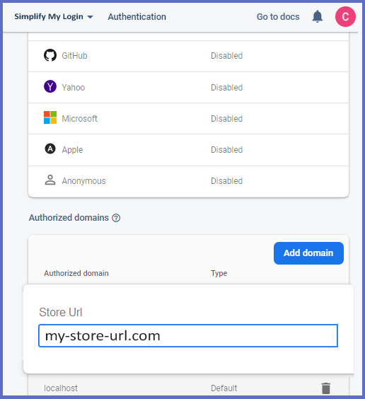

First, go to the Apps store and search for OTP Login. Here you will find the OTP Login app. Add it to your store. Once installed, the user will be redirected to the app interface.
Before configuring Login My Phone Number app, you must create a project on Google Firebase and enter the project details in the configurations section. To create a project on Google Firebase, you need to follow the steps which are mentioned below:
1) Create an Account on Google Firebase and Login.
2) Click on the “Create a Project“ button.
3) Enter a specific project name and click on the “Continue” button.
4) Now, again click on the “Continue” button in the Google analytics step.
5) Select “Default Account to Firebase” option in the next step and then click on the “Create Project” button. (Note: Ignore this step if you don’t get this step from Firebase)
6) Check all the options in “Configure Google Analytics” page and click on the “Create Project” button. (Note: Ignore this step if you don’t get this step from Firebase)
7) Your new project is ready. Press the “Continue” button.
8) Now you can see your project dashboard.
9) Click on the “Authentication” button available in the left menu and then press the “Get Started” button.
10) Here navigate towards the “Sign-in Method” tab and enable the “Phone” option.
11) Now scroll down on the same page and click on the “Add Domain” button in the Authorized Domain section.
12) Copy your website URL here and “Save” it by clicking on the “Add” button. Here you can add two web url i.e. your domain name and store name url as well
13) Now click on the project settings icon placed after “Project Overview” and choose the “Project Settings” option.
14) In the “General” tab, move down to the “Your Apps” section and click “Web” icon to create the app.
15) Select the name for your app and press “Register App” button.
16) Your app script is ready. Now press the “Continue to Console” button.
17) Now you can see all the needed details in “Your Apps” section. Just copy these details in “OTP Login” in Shopify.
18) ...